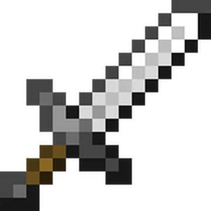
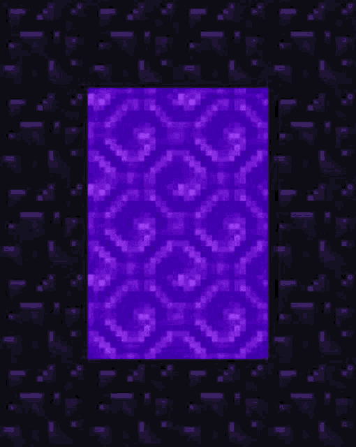

Пояснення: Кам'яні інструменти в нас вже є час у шахту! Поки ми будемо у ній на нас будуть нападати монстри! Та ще ми будемо прокачувати своє знаряддя!
Крок 1: Спускаемось у шахту! Але монстри будуть стежити за нами та нападати будь готовий відбиватись.

Крок 2: Першим ділом нам треба прокачати знаряддя до залізного рівня! Кам'яні теж непогані але нам треба краще! (Добуваемо 64 слитків заліза)

Крок 3: Тепер ми броньовані, та з усім арсеналом біжим по діаманти на -5 висоту (1.20.1)
А тепер час у незер погнали!
